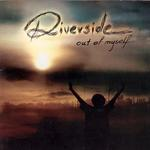

| Artist: | Riverside |
| Title: | Out Of Myself |
| Label: | The Lasers Edge LE1039 |
| Length(s): | 53 minutes |
| Year(s) of release: | 2004 |
| Month of review: | [03/2005] |
| 1) | The Same River | 12.01 |
| 2) | Out Of Myself | 3.43 |
| 3) | I Believe | 4.14 |
| 4) | Reality Dream | 6.13 |
| 5) | Loose Heart | 4.48 |
| 6) | Reality Dream II | 4.43 |
| 7) | In Two Minds | 4.35 |
| 8) | The Curtain Falls | 7.57 |
| 9) | OK | 4.45 |
The title track on the other hand comes to business right away. The bass is throbbing, rushing, urging the vocals on towards the chorus, the guitar washing over. In the bridge section following this the music borders on alternative, but the addition of progressive elements brings texture, especially found in the mesmerizing guitar. The sudden end of the track explains the rush.
I Believe starts with synth and background sounds, the vocalist musing to himself (seemingly in a bar) he has to believe in himself. From this we move into a section that's near guitar-vocal, slowly picking up with the addition of bass and something that sounds like a more traditional string instrument. From this we ebb towards the end, once more acoustic guitar and vocals only.
Reality Dream is an open sounding instrumental track, carried by a positive sounding guitar and happy bass. At times we hear vocal chanting in the back across the melody or a heavy rhythm guitar setting in.
Loose Heart with its strumming bass and controlled vocals for most of the track has a gentle feel. The face of the track is suddenly changed with the onset of a heavy rhythm guitar followed by grunted vocals as nears its end. A heart with two sides.
Reality Dream II features a lingering guitar, simply supported by bass, drums and keys in the back. The track sounds very friendly, but fails to build the sort of tension one might expect, floating by.
In Two Minds restores the guitar sounding near creepy, even though the base is once again guitar vocal. In the mid section we get some synth and more guitar making for a solo. The structure of this song is pretty traditional.
The Curtain Falls opens with the open sounding guitar once again. Several minutes into the song a break brings on a darker feel, with whispers more than vocals. This long middle section is pushed forward by lingering guitars and throbbing bass, slowly raising the tension, until the heavy guitar sets in once again, supported by tense keyboard sounds. The tension abates, returning to the guitar and bass. Like the opening track this is an example of building towards a climax, after which the tension just seeps away because said climax never comes.
Closer OK is very atmospherical, supported by synth and slowly sung vocals. The brushed percussion and guitar solo would fit in well with instrumental jazz. In fact, this track would probably sound pretty good in a smoky pianobar.